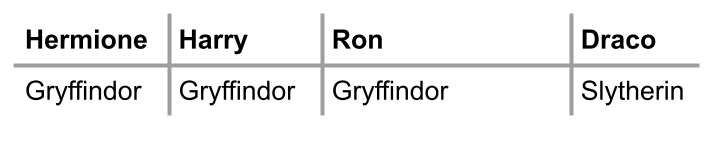
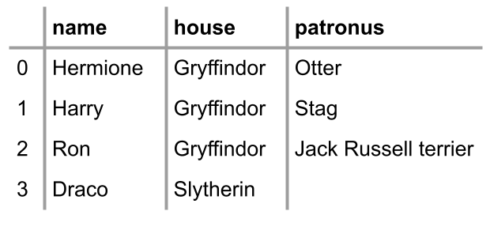
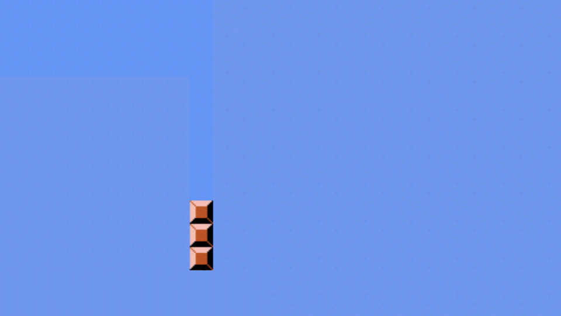
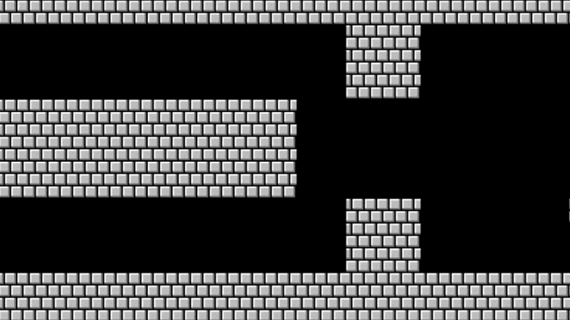

Lecture 2
- Loops
- While Loops
- For Loops
- Improving with User Input
- More About Lists
- Length
- Dictionaries
- Mario
- Summing Up
Loops
- Essentially, loops are a way to do something over and over again.
- Begin by typing
code cat.pyin the terminal window. -
In the text editor, begin with the following code:
print("meow") print("meow") print("meow")Running this code by typing
python cat.py, you’ll notice that the program meows three times. - In developing as a programmer, you want to consider how one could improve areas of one’s code where one types the same thing over and over again. Imagine where one might want to “meow” 500 times. Would it be logical to type that same expression of
print("meow")over and over again? - Loops enable you to create a block of code that executes over and over again.
While Loops
- The
whileloop is nearly universal throughout all coding languages. - Such a loop will repeat a block of code over and over again.
-
In the text editor window, edit your code as follows:
i = 3 while i != 0: print("meow")Notice how even though this code will execute
print("meow")multiple times, it will never stop! It will loop forever.whileloops work by repeatedly asking if the condition of the loop has been fulfilled. In this case, the interpreter is asking, “doesinot equal zero?” When you get stuck in a loop that executes forever, you can pressCtrl+Con your keyboard to break out of the loop. -
To fix this loop that lasts forever, we can edit our code as follows
i = 3 while i != 0: print("meow") i = i - 1Notice that now our code executes properly, reducing
iby1for each “iteration” through the loop. The term iteration has special significance within coding. By iteration, we mean one cycle through the loop. The first iteration is the “0th” iteration through the loop. The second is the “1st” iteration. In programming, we count starting with 0, then 1, then 2. -
We can further improve our code as follows:
i = 1 while i <= 3: print("meow") i = i + 1Notice that when we code
i = i + 1we assign the value ofifrom the right to the left. Above, we are startingiat one, like most humans count (1, 2, 3). If you execute the code above, you’ll see it meows three times. It’s best practice in programming to begin counting with zero. -
We can improve our code to start counting with zero:
i = 0 while i < 3: print("meow") i += 1Notice how changing the operator to
i < 3allows our code to function as intended. We begin by counting with 0 and it iterates through our loop three times, producing three meows. Also, notice howi += 1is the same as sayingi = i + 1. -
Our code at this point is illustrated as follows:
flowchart TD A([start]) --> B[i = 0] B --> C{i < 3} C -- True --> D["#quot;meow#quot;"] D --> E[i += 1] E --> C C -- False --> F([stop])Notice how our loop counts i up to, but not through
3.
For Loops
- A
forloop is a different type of loop. - To best understand a
forloop, it’s best to begin by talking about a new variable type called alistin Python. As in other areas of our lives, we can have a grocery list, a to-do list, etc. -
A
forloop iterates through alistof items. For example, in the text editor window, modify yourcat.pycode as follows:for i in [0, 1, 2]: print("meow")Notice how clean this code is compared to your previous
whileloop code. In this code,ibegins with0, meows,iis assigned1, meows, and, finally,iis assigned2, meows, and then ends. -
While this code accomplishes what we want, there are some possibilities for improving our code for extreme cases. At first glance, our code looks great. However, what if you wanted to iterate up to a million? It’s best to create code that can work with such extreme cases. Accordingly, we can improve our code as follows:
for i in range(3): print("meow")Notice how
range(3)provides back three values (0,1, and2) automatically. This code will execute and produce the intended effect, meowing three times. -
Our code can be further improved. Notice how we never use
iexplicitly in our code. That is, while Python needs theias a place to store the number of the iteration of the loop, we never use it for any other purpose. In Python, if such a variable does not have any other significance in our code, we can simply represent this variable as a single underscore_. Therefore, you can modify your code as follows:for _ in range(3): print("meow")Notice how changing the
ito_has zero impact on the functioning of our program. -
Our code can be further improved. To stretch your mind to the possibilities within Python, consider the following code:
print("meow" * 3)Notice how it will meow three times, but the program will produce
meowmeowmeowas the result. Consider: How could you create a line break at the end of each meow? -
Indeed, you can edit your code as follows:
print("meow\n" * 3, end="")Notice how this code produces three meows, each on a separate line. By adding
end=""and the\nwe tell the interpreter to add a line break at the end of each meow.
Improving with User Input
- Perhaps we want to get input from our user. We can use loops as a way of validating the input of the user.
- A common paradigm within Python is to use a
whileloop to validate the input of the user. - For example, let’s try prompting the user for a number greater than or equal to 0:
while True: n = int(input("What's n? ")) if n < 0: continue else: break - Notice that we’ve introduced two new keywords in Python,
continueandbreak.continueexplicitly tells Python to go to the next iteration of a loop.break, on the other hand, tells Python to “break out” of a loop early before it has finished all of its iterations. In this case, we’llcontinueto the next iteration of the loop whennis less than 0—ultimately reprompting the user with “What’s n?”. If, though,nis greater than or equal to 0, we’llbreakout of the loop and allow the rest of our program to run. -
It turns out that the
continuekeyword is redundant in this case. We can improve our code as follows:while True: n = int(input("What's n? ")) if n > 0: break for _ in range(n): print("meow")Notice how this while loop will always run (forever) until
nis greater than0. Whennis greater than0, the loop breaks. -
Bringing in our prior learning, we can use functions to further improve our code:
def main(): meow(get_number()) def get_number(): while True: n = int(input("What's n? ")) if n > 0: return n def meow(n): for _ in range(n): print("meow") main()Notice how not only did we change your code to operate in multiple functions, but we also used a
returnstatement toreturnthe value ofnback to themainfunction.
More About Lists
- Consider the world of Hogwarts from the famed Harry Potter universe.
- In the terminal, type
code hogwarts.py. -
In the text editor, code as follows:
students = ["Hermione", "Harry", "Ron"] print(students[0]) print(students[1]) print(students[2])Notice how we have a
listof students with their names as above. We then print the student who is at the 0th location, “Hermione”. Each of the other students is printed as well. -
Just as we illustrated previously, we can use a loop to iterate over the list. You can improve your code as follows:
students = ["Hermione", "Harry", "Ron"] for student in students: print(student)Notice that for each
studentin thestudentslist, it will print the student as intended. You might wonder why we did not use the_designation as discussed prior. We choose not to do this becausestudentis explicitly used in our code. - You can learn more in Python’s documentation of lists.
Length
- We can utilize
lenas a way of checking the length of thelistcalledstudents. -
Imagine that you don’t simply want to print the name of the student but also their position in the list. To accomplish this, you can edit your code as follows:
students = ["Hermione", "Harry", "Ron"] for i in range(len(students)): print(i + 1, students[i])Notice how executing this code results in not only getting the position of each student plus one using
i + 1, but also prints the name of each student.lenallows you to dynamically see how long the list of the students is regardless of how much it grows. - You can learn more in Python’s documentation of len.
Dictionaries
-
dicts or dictionaries are a data structure that allows you to associate keys with values. - Where a
listis a list of multiple values, adictassociates a key with a value. -
Considering the houses of Hogwarts, we might assign specific students to specific houses.

-
We could use
lists alone to accomplish this:students = ["Hermione", "Harry", "Ron", "Draco"] houses = ["Gryffindor", "Gryffindor", "Griffindor", "Slytherin"]Notice that we can promise that we will always keep these lists in order. The individual at the first position of
studentsis associated with the house at the first position of thehouseslist, and so on. However, this can become quite cumbersome as our lists grow! -
We can better our code using a
dictas follows:students = { "Hermione": "Gryffindor", "Harry": "Gryffindor", "Ron": "Gryffindor", "Draco": "Slytherin", } print(students["Hermione"]) print(students["Harry"]) print(students["Ron"]) print(students["Draco"])Notice how we use
{}curly braces to create a dictionary. Wherelists use numbers to iterate through the list,dicts allow us to use words. -
Run your code and make sure your output is as follows:
$ python hogwarts.py Gryffindor Gryffindor Gryffindor Slytherin -
We can improve our code as follows:
students = { "Hermione": "Gryffindor", "Harry": "Gryffindor", "Ron": "Gryffindor", "Draco": "Slytherin", } for student in students: print(student)Notice how, executing this code, the for loop will only iterate through all the keys, resulting in a list of the names of the students. How could we print out both values and keys?
-
Modify your code as follows:
students = { "Hermione": "Gryffindor", "Harry": "Gryffindor", "Ron": "Gryffindor", "Draco": "Slytherin", } for student in students: print(student, students[student])Notice how
students[student]will go to each student’s key and find the value of their house. Execute your code, and you’ll notice how the output is a bit messy. -
We can clean up the print function by improving our code as follows:
students = { "Hermione": "Gryffindor", "Harry": "Gryffindor", "Ron": "Gryffindor", "Draco": "Slytherin", } for student in students: print(student, students[student], sep=", ")Notice how this creates a clean separation of a
,between each item printed. -
If you execute
python hogwarts.py, you should see the following:$ python hogwarts.py Hermione, Gryffindor Harry, Gryffindor Ron, Gryffindor Draco, Slytherin -
What if we have more information about our students? How could we associate more data with each of the students?

-
You can imagine wanting to have lots of data associated with multiple keys. Enhance your code as follows:
students = [ {"name": "Hermione", "house": "Gryffindor", "patronus": "Otter"}, {"name": "Harry", "house": "Gryffindor", "patronus": "Stag"}, {"name": "Ron", "house": "Gryffindor", "patronus": "Jack Russell terrier"}, {"name": "Draco", "house": "Slytherin", "patronus": None}, ]Notice how this code creates a
listofdicts. Thelistcalledstudentshas fourdictswithin it: One for each student. Also, notice that Python has a specialNonedesignation where there is no value associated with a key. -
Now, you have access to a whole host of interesting data about these students. Now, further modify your code as follows:
students = [ {"name": "Hermione", "house": "Gryffindor", "patronus": "Otter"}, {"name": "Harry", "house": "Gryffindor", "patronus": "Stag"}, {"name": "Ron", "house": "Gryffindor", "patronus": "Jack Russell terrier"}, {"name": "Draco", "house": "Slytherin", "patronus": None}, ] for student in students: print(student["name"], student["house"], student["patronus"], sep=", ")Notice how the
forloop will iterate through each of thedicts inside thelistcalledstudents. - You can learn more in Python’s Documentation of
dicts.
Mario
-
Remember that the classic game Mario has a hero jumping over bricks. Let’s create a textual representation of this game.

-
Begin coding as follows:
print("#") print("#") print("#")Notice how we are copying and pasting the same code over and over again.
-
Consider how we could better the code as follows:
for _ in range(3): print("#")Notice how this accomplishes essentially what we want to create.
-
Consider: Could we further abstract for solving more sophisticated problems later with this code? Modify your code as follows:
def main(): print_column(3) def print_column(height): for _ in range(height): print("#") main()Notice how our column can grow as much as we want without any hard coding.
-
Now, let’s try to print a row horizontally. Modify your code as follows:
def main(): print_row(4) def print_row(width): print("?" * width) main()Notice how we now have code that can create left-to-right blocks.
-
Examining the slide below, notice how Mario has both rows and columns of blocks.

-
Consider: How could we implement both rows and columns within our code? Modify your code as follows:
def main(): print_square(3) def print_square(size): # For each row in square for i in range(size): # For each brick in row for j in range(size): # Print brick print("#", end="") # Print blank line print() main()Notice that we have an outer loop that addresses each row in the square. Then, we have an inner loop that prints a brick in each row. Finally, we have a
printstatement that prints a blank line. -
We can further abstract away our code:
def main(): print_square(3) def print_square(size): for i in range(size): print_row(size) def print_row(width): print("#" * width) main()
Summing Up
You now have another power in your growing list of your Python abilities. In this lecture, we addressed…
- Loops
whileforlenlistdict